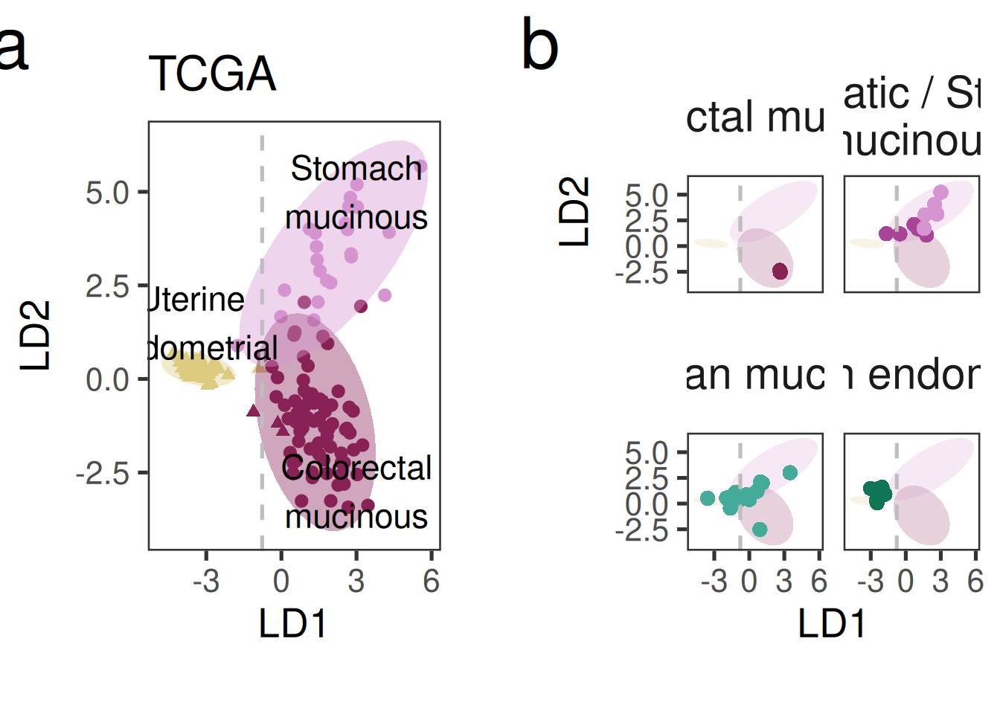
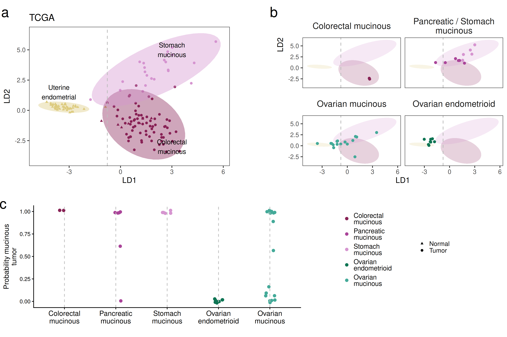

Last updated: 2026-08-31
Checks: 6 1
Knit directory: repo/analysis/
This reproducible R Markdown analysis was created with workflowr (version 1.7.2). The Checks tab describes the reproducibility checks that were applied when the results were created. The Past versions tab lists the development history.
Great! Since the R Markdown file has been committed to the Git repository, you know the exact version of the code that produced these results.
Great job! The global environment was empty. Objects defined in the global environment can affect the analysis in your R Markdown file in unknown ways. For reproduciblity it’s best to always run the code in an empty environment.
The command set.seed(12345) was run prior to running the
code in the R Markdown file. Setting a seed ensures that any results
that rely on randomness, e.g. subsampling or permutations, are
reproducible.
Nice! There were no cached chunks for this analysis, so you can be confident that you successfully produced the results during this run.
Great job! Using relative paths to the files within your workflowr project makes it easier to run your code on other machines.
Great! You are using Git for version control. Tracking code development and connecting the code version to the results is critical for reproducibility.
The results in this page were generated with repository version 9e09a1a. See the Past versions tab to see a history of the changes made to the R Markdown and HTML files.
Note that you need to be careful to ensure that all relevant files for
the analysis have been committed to Git prior to generating the results
(you can use wflow_publish or
wflow_git_commit). workflowr only checks the R Markdown
file, but you know if there are other scripts or data files that it
depends on. Below is the status of the Git repository when the results
were generated:
Ignored files:
Ignored: .Rhistory
Ignored: .claude/
Ignored: .uvr/
Ignored: .vscode/
Ignored: REPRODUCIBILITY_PLAN.html
Ignored: Rplots.pdf
Ignored: _targets/
Ignored: bam_clean/
Ignored: baseline_review/
Ignored: cards/dashboard.html
Ignored: code/archive/
Ignored: data/crosswalk_private.csv
Ignored: data/ega_file_listing.csv
Ignored: extdata/bVals.rds
Ignored: extdata/bVals081820.rds
Ignored: extdata/mutation_reports/
Ignored: hallberg2025.base/
Ignored: hallberg2025.meth.data/data-raw/.Rhistory
Ignored: hallberg2025.meth.data/data-raw/_targets/
Ignored: hallberg2025.meth.data/data-raw/_targets_change002_delta/
Ignored: hallberg2025.meth.data/data-raw/beta_concordance_batch1.png
Ignored: hallberg2025.meth.data/data-raw/logs/
Ignored: hallberg2025.meth.data/data-raw/slurm-34256940.out
Ignored: hallberg2025.meth.data/data-raw/slurm-34683691.out
Ignored: hallberg2025.seq.data/data-raw/.Renviron
Ignored: hallberg2025.seq.data/data-raw/Rplots.pdf
Ignored: hallberg2025.seq.data/data-raw/facets_metrics/
Ignored: hallberg2025.seq.data/data-raw/facets_metrics_wes/
Ignored: hallberg2025.seq.data/data-raw/logs/
Ignored: hallberg2025.seq.data/data-raw/reproduction_output/
Ignored: hallberg2025.seq.data/data-raw/slurm-34294594.out
Ignored: hallberg2025.seq.data/data-raw/slurm-34352530.out
Ignored: hallberg2025.seq.data/data-raw/slurm-34491256.out
Ignored: hallberg2025.seq.data/data-raw/slurm-34523320.out
Ignored: hallberg2025.seq.data/data-raw/slurm-34537166.out
Ignored: hallberg2025.seq.data/data-raw/slurm-w2-verify-34363920.out
Ignored: hallberg2025.seq.data/data-raw/slurm-w3-verify-34368104.out
Ignored: hallberg2025.seq.data/data-raw/slurm-w3-verify-34408517.out
Ignored: hallberg2025.seq.data/data-raw/snp_matrix/
Ignored: hallberg2025.seq.data/data-raw/snp_matrix_wes/
Ignored: hallberg2025.seq.data/data-raw/tools/snplocschr1
Ignored: hallberg2025.seq.data/data-raw/tools/snplocschr10
Ignored: hallberg2025.seq.data/data-raw/tools/snplocschr11
Ignored: hallberg2025.seq.data/data-raw/tools/snplocschr12
Ignored: hallberg2025.seq.data/data-raw/tools/snplocschr13
Ignored: hallberg2025.seq.data/data-raw/tools/snplocschr14
Ignored: hallberg2025.seq.data/data-raw/tools/snplocschr15
Ignored: hallberg2025.seq.data/data-raw/tools/snplocschr16
Ignored: hallberg2025.seq.data/data-raw/tools/snplocschr17
Ignored: hallberg2025.seq.data/data-raw/tools/snplocschr18
Ignored: hallberg2025.seq.data/data-raw/tools/snplocschr19
Ignored: hallberg2025.seq.data/data-raw/tools/snplocschr2
Ignored: hallberg2025.seq.data/data-raw/tools/snplocschr20
Ignored: hallberg2025.seq.data/data-raw/tools/snplocschr21
Ignored: hallberg2025.seq.data/data-raw/tools/snplocschr22
Ignored: hallberg2025.seq.data/data-raw/tools/snplocschr3
Ignored: hallberg2025.seq.data/data-raw/tools/snplocschr4
Ignored: hallberg2025.seq.data/data-raw/tools/snplocschr5
Ignored: hallberg2025.seq.data/data-raw/tools/snplocschr6
Ignored: hallberg2025.seq.data/data-raw/tools/snplocschr7
Ignored: hallberg2025.seq.data/data-raw/tools/snplocschr8
Ignored: hallberg2025.seq.data/data-raw/tools/snplocschr9
Ignored: hallberg2025.seq.data/data-raw/tools/snplocschrX
Ignored: hallberg2025.seq.data/data-raw/tools/snplocschrY
Ignored: hallberg2025.seq.data/data-raw/tools/zenodo-deposit-draft/
Ignored: hallberg2025.seq.data/data-raw/trellis_output/
Ignored: hallberg2025.seq.data/tests/testthat/_snaps/
Ignored: hallberg2025/
Ignored: inst/
Ignored: logs/
Ignored: manuscript/audit/
Ignored: manuscript/composite-1.eps
Ignored: manuscript/data_quality.html
Ignored: manuscript/hallberg2025.aux
Ignored: manuscript/hallberg2025.bbl
Ignored: manuscript/hallberg2025.blg
Ignored: manuscript/hallberg2025.log
Ignored: manuscript/supplemental.aux
Ignored: manuscript/supplemental.log
Ignored: manuscript/supplemental.pdf
Ignored: manuscript/testing/
Ignored: manuscript/~/
Ignored: output/01-coverage_stats.rmd/
Ignored: output/02-mutations.rmd/
Ignored: output/03-mutations.rmd/
Ignored: output/04-mutations.rmd/
Ignored: output/05-data_integration.rmd/
Ignored: output/07-figure5.rmd/stats.rds
Ignored: output/08-figure5.rmd/
Ignored: output/ext-figure9.Rmd/
Ignored: output/ext-figures/ext-figure9.Rmd/proportion_methylated.rds
Ignored: output/ext-figures/ext-figure9.Rmd/wilcox_stats.csv
Ignored: output/ext-figures/mutation_prevalence.rmd/
Ignored: output/facets-trellis/
Ignored: output/facets/
Ignored: output/figure6_jhu-heatmap.Rmd/
Ignored: output/figure6_tcga-heatmap.Rmd/
Ignored: output/gene_pathway.rmd/
Ignored: output/methylation.Rmd/
Ignored: output/mutations.html
Ignored: output/mutations.rds
Ignored: output/pcs.Rmd/
Ignored: output/pgdx_reports.rmd/
Ignored: output/read_length.rmd/
Ignored: output/temp.tar.gz
Ignored: output/temp/
Ignored: public/
Untracked files:
Untracked: manuscript/submitted/
Note that any generated files, e.g. HTML, png, CSS, etc., are not included in this status report because it is ok for generated content to have uncommitted changes.
These are the previous versions of the repository in which changes were
made to the R Markdown (analysis/figure6.Rmd) and HTML
(docs/figure6.html) files. If you’ve configured a remote
Git repository (see ?wflow_git_remote), click on the
hyperlinks in the table below to view the files as they were in that
past version.
| File | Version | Author | Date | Message |
|---|---|---|---|---|
| Rmd | 046240e | rscharpf | 2026-08-03 | MAN-05: repoint _targets.R and analysis/manuscript Rmds at renamed packages |
| html | 21ba89c | rscharpf | 2026-07-31 | GIT-03: untrack reproducible docs/ and output/ generated artifacts |
| html | 9b7c32e | rscharpf | 2026-07-28 | MAN-03: repoint the manuscript pipeline and analysis pages at OsMethExpData |
| html | 0bc1639 | rscharpf | 2026-07-01 | Update docs, OvarianSubtypeExperimentData accessors, and artifact baseline (prettyNum formatting fix for table_S6/S8) |
| Rmd | 8eb0216 | rscharpf | 2026-07-01 | Fix: suppress sessionInfo() in figure6.Rmd and ext-figure3.Rmd to avoid La_library() segfault in callr subprocess |
| Rmd | 2af6c2e | rscharpf | 2026-07-01 | figure6.Rmd: remove dead complexheatmap chunk and unused packages |
| html | 2af6c2e | rscharpf | 2026-07-01 | figure6.Rmd: remove dead complexheatmap chunk and unused packages |
| Rmd | c666d6d | rscharpf | 2026-06-30 | Fix figure6.Rmd: move tar_read(probLDA) before complexheatmap chunk |
| html | 0476813 | rscharpf | 2026-06-30 | Rebuild manuscript PDF and analysis HTMLs with corrected mutation spectra |
| html | 00cb585 | rscharpf | 2026-06-29 | wflow_build: regenerate analysis/ HTML and fix ext-figure2 |
| Rmd | bdba2c8 | rscharpf | 2026-06-27 | Fix CI: pass store=here("_targets") to tar_read() in analysis Rmds |
| html | bdba2c8 | rscharpf | 2026-06-27 | Fix CI: pass store=here("_targets") to tar_read() in analysis Rmds |
| Rmd | 1c31ebd | rscharpf | 2026-06-27 | Phase 6: integrate figure6 Rmds into targets.R; delete code/figure6*.Rmd |
| Rmd | ee11344 | rscharpf | 2026-06-27 | probLDA: switch to CSV; add code output verification |
| Rmd | 262bebc | rscharpf | 2026-06-26 | Restore figure6.Rmd (accidentally emptied in b811007) |
| html | eb5d53d | rscharpf | 2026-06-24 | Replace gridExtra with patchwork in figure1.Rmd; rebuild derived HTML |
| Rmd | b811007 | rscharpf | 2026-06-23 | Pre-existing uncommitted changes (staged for record-keeping) |
| Rmd | 4d4dec1 | rscharpf | 2025-06-18 | Update workflow figures |
| html | 4d4dec1 | rscharpf | 2025-06-18 | Update workflow figures |
| Rmd | f28db88 | rscharpf | 2025-06-03 | Update figures |
| Rmd | 84d9f1d | Shashikant Koul | 2025-03-18 | Change TCGA n=164 to 150 to drop signet ring cells |
| Rmd | c70294f | Shashikant Koul | 2025-03-16 | Add JHU pancreatic samples to fig6 |
| Rmd | f40c35c | Shashikant Koul | 2025-03-12 | Update analysis files for fig 6 and supp fig 10 and figures |
| Rmd | 7bdaf77 | Shashikant Koul | 2025-03-10 | Update endometri-al to -oid in fig 6 |
| html | ce3c107 | Shashikant Koul | 2025-02-19 | Update supp fig 10 after ComplexHeatmap inf loop fix |
| Rmd | a0144be | rscharpf | 2025-02-19 | Work-around to avoid saving large complex heatmaps |
| html | a0144be | rscharpf | 2025-02-19 | Work-around to avoid saving large complex heatmaps |
| Rmd | f553cbe | rscharpf | 2025-01-18 | Merge branch ‘main’ into rob |
| Rmd | 12b43de | rscharpf | 2025-01-18 | Use microtype with pdflatex |
| html | 7d0b54a | Alice Eastman | 2025-01-16 | removing JHU normal methylation data from figure 6 |
| Rmd | 9d2c3eb | Alice Eastman | 2025-01-16 | removed JHU normal methylation from figure 6 |
| html | 9d2c3eb | Alice Eastman | 2025-01-16 | removed JHU normal methylation from figure 6 |
| Rmd | d39bc3a | rscharpf | 2024-11-12 | Change JHU to Hallberg et al. in Fig. 6 |
| html | d39bc3a | rscharpf | 2024-11-12 | Change JHU to Hallberg et al. in Fig. 6 |
| html | 05caea1 | rscharpf | 2024-08-30 | Update html and figures |
| html | fea052d | rscharpf | 2024-08-18 | Updates for latest ovarian.subtypes R package |
| html | 4a850fc | Shashikant Koul | 2024-07-17 | Rebuild and publish |
| html | 79ddb57 | Shashikant Koul | 2024-07-02 | Rebuild docs |
| Rmd | ba537bb | Shashikant Koul | 2024-07-02 | Add ovarian.subtypes package for tumor_colors() and manifest |
| Rmd | 940b158 | rscharpf | 2024-06-07 | Remove heatmap from figure 6 |
| html | 940b158 | rscharpf | 2024-06-07 | Remove heatmap from figure 6 |
| Rmd | ce51ea5 | rscharpf | 2024-06-05 | Use shape symbol in TCGA LDA figure |
| html | ce51ea5 | rscharpf | 2024-06-05 | Use shape symbol in TCGA LDA figure |
| Rmd | 7d45215 | rscharpf | 2024-06-05 | Figure 6 caption updates |
| Rmd | fab4992 | rscharpf | 2024-06-04 | Updates to Fig 2, 4, and 6 |
| html | fab4992 | rscharpf | 2024-06-04 | Updates to Fig 2, 4, and 6 |
| Rmd | 0b03d0c | rscharpf | 2024-06-03 | Updates to Fig 6 |
| html | 0b03d0c | rscharpf | 2024-06-03 | Updates to Fig 6 |
| Rmd | 38fd085 | rscharpf | 2024-06-02 | Update Fig 6 caption |
| html | 38fd085 | rscharpf | 2024-06-02 | Update Fig 6 caption |
| html | 423c880 | rscharpf | 2024-05-26 | Update COI and add renv info |
| html | 825bdcc | rscharpf | 2024-05-26 | Update workflowr analyses |
| html | e1c6bd6 | rscharpf | 2024-04-13 | Build site. |
| Rmd | 3825c6b | rscharpf | 2024-04-13 | wflow_publish("analysis/figure6.Rmd") |
| html | 85ce11b | rscharpf | 2024-03-14 | echo code for fig6 |
| Rmd | 27b528f | rscharpf | 2024-03-13 | update figure 6 caption |
| html | ec38713 | rscharpf | 2024-01-05 | Build site. |
| Rmd | 8e9de8a | rscharpf | 2024-01-05 | Split heatmap by study |
| html | ed680b7 | rscharpf | 2024-01-04 | Build site. |
| Rmd | 7714210 | rscharpf | 2024-01-04 | wflow_publish("analysis/figure6.Rmd") |
| html | ab80f86 | rscharpf | 2024-01-04 | Build site. |
| Rmd | 59e50b0 | rscharpf | 2024-01-04 | wflow_publish("analysis/figure6.Rmd") |
| html | bf38e1d | rscharpf | 2024-01-02 | Update html docs and figure pdfs |
| html | cde2c39 | rscharpf | 2023-12-30 | Update figures and html |
| html | 24991cd | rscharpf | 2023-12-30 | Archive old scripts |
| html | ca80333 | rscharpf | 2023-12-29 | Build site. |
| Rmd | 82c43db | rscharpf | 2023-12-29 | wflow_publish("analysis/figure6.Rmd") |
| html | 0b35e68 | rscharpf | 2023-12-29 | Build site. |
| Rmd | 05f8ca7 | rscharpf | 2023-12-29 | wflow_publish("analysis/figure6.Rmd") |
| html | fd5cd41 | rscharpf | 2023-11-26 | updates |
| html | 63d8cf9 | rscharpf | 2023-11-26 | Add ovarian.subtypes package. Update analysis rmarkdowns |
| html | 435f00f | rscharpf | 2023-11-23 | Revised manifest with genotype ids for grouping tumor/normal pairs |
| html | d00f495 | rscharpf | 2023-09-05 | Update htmls/pdfs |
| Rmd | f4403ee | rscharpf | 2023-09-05 | Revise figure 6 to include linear discriminant analysis |
| Rmd | e6d6fac | rscharpf | 2023-06-01 | Updates to figure 6 to correct bug in colors |
| html | 5cdfcb8 | rscharpf | 2023-06-01 | Changed sections to subsections to make font smaller |
| html | eb13f53 | rscharpf | 2023-04-02 | Modified authors to allow left-justification of affils |
| html | fcfeeaa | rscharpf | 2023-01-23 | Updates to supplemental tables and html docs |
| html | 621ecbd | rscharpf | 2022-12-08 | updates to figures 6 (meth heatmap) and 7 (survival) |
| Rmd | 2976e36 | rscharpf | 2022-12-08 | Redo of PCA analysis on jhu lab methylation |
| Rmd | 42f3289 | rscharpf | 2022-12-03 | update workflow figs |
| html | 42f3289 | rscharpf | 2022-12-03 | update workflow figs |
| Rmd | 32cb2bd | rscharpf | 2022-10-02 | Put figure captions in rmarkdown code chunks |
| html | 32cb2bd | rscharpf | 2022-10-02 | Put figure captions in rmarkdown code chunks |
| Rmd | ad37fc9 | rscharpf | 2022-10-02 | initialize repo |
| html | ad37fc9 | rscharpf | 2022-10-02 | initialize repo |
library(ggplot2)
library(here)
library(tidyverse)
library(grid)
library(gridExtra)
library(targets)
library(hallberg2025.base)
data(manifest, package = "hallberg2025.base")
# wflow_build() renders Rmds from analysis/, so tar_read() needs an explicit
# store path (default "_targets" would resolve to analysis/_targets, not found)
tgt_store <- here("_targets")jhu_lda_result <- tar_read(jhu_lda_fig, store = tgt_store)
jhu.lda <- jhu_lda_result$grob
jhu.leg <- jhu_lda_result$legend
tcga_lda_result <- tar_read(tcga_lda_fig, store = tgt_store)
tcga.lda <- tcga_lda_result$grob
tcga.lda.legends <- tcga_lda_result$legenddx.colors <- tumor_colors()
names(dx.colors) <- str_wrap(names(dx.colors), 10)
class.probs <- tar_read(probLDA, store = tgt_store) %>%
mutate(lab = ifelse(lab == "JHU", "Hallberg et al.", "TCGA"))
levs <- c("Colorectal mucinous",
"Pancreatic mucinous",
"Stomach mucinous",
"Ovarian endometrioid",
"Ovarian mucinous") %>%
str_wrap(10)
class.probs.fig <- class.probs %>%
mutate(Mucinous=`Colorectal mucinous` + `Stomach mucinous`,
Groups=str_wrap(Groups, 10)) %>%
filter(Groups %in% levs) %>%
mutate(histology=factor(Groups, levs)) %>%
ggplot(aes(histology, Mucinous)) +
geom_jitter(aes(color=histology),
width=0.1, height=0.02,
size=3) +
theme_classic(base_size=18) +
scale_color_manual(values=dx.colors) +
ylab("Probability mucinous\ntumor") +
xlab("") +
geom_vline(xintercept=1:5, linetype="dashed", color="gray") +
theme(legend.text=element_text(lineheight=0.8, size=17),
legend.key.spacing.y=unit(0.25, "cm"),
axis.text.x=element_text(size=18)) +
guides(shape=guide_legend(title=""),
color=guide_legend(title=""))
leg <- ggpubr::get_legend(class.probs.fig)
class.probs.fig <- class.probs.fig +
guides(shape="none",
color="none")
gprobs <- ggplotGrob(class.probs.fig)addGrob <- function(i, j, grob, w=1, h=1){
if(missing(i) && !missing(j)){
pushViewport(viewport(layout.pos.col=j,
width=unit(w, "npc"),
height=unit(h, "npc")))
grid.draw(grob)
popViewport()
return()
}
if(missing(j) && !missing(i)){
pushViewport(viewport(layout.pos.row=i,
width=unit(w, "npc"),
height=unit(h, "npc")))
grid.draw(grob)
popViewport()
return()
}
pushViewport(viewport(layout.pos.row=i,
layout.pos.col=j,
width=unit(w, "npc"),
height=unit(h, "npc")))
grid.draw(grob)
popViewport()
}mat <- rbind(c(1, 2, 3), # 1 = TCGA LDA, 3 = JHU LDA
c(4, 4, 4)) # class probabilities
w <- c(0.5, 0.085, 0.5)
h <- c(1, 0.02)
gl <- grid.layout(nrow=length(h),
ncol=length(w),
widths=w,
heights=h)
grid.vp <- viewport(layout=gl)
margin.whitespace <- viewport(y=unit(0.05, "npc"),
height=unit(0.90, "npc"),
just="bottom")
vp.fig6 <- viewport(y=unit(0.4, "npc"),
height=unit(0.6, "npc"),
just="bottom")
vp.class.probs <- viewport(y=unit(0, "npc"),
x=unit(0, "npc"),
width=unit(0.6, "npc"),
height=unit(0.4, "npc"),
just=c("left", "bottom"))
vp.legend <- viewport(y=unit(0.45, "npc"),
x=unit(0.6, "npc"),
width=unit(0.25, "npc"),
height=unit(0.35, "npc"),
just=c("left", "top"))
vp.tcga.legend <- viewport(y=unit(0.7, "npc"),
x=unit(0.85, "npc"),
width=unit(0.35, "npc"),
height=unit(0.35, "npc"),
just=c("left", "top"))grid.newpage()pushViewport(margin.whitespace)
pushViewport(grid.vp)
addGrob(1, 1, tcga.lda, w=0.5, h=0.5)
addGrob(1, 3, jhu.lda)
addGrob(2, grob=nullGrob())
grid.text(letters[1:2],
x=unit(c(0.01, 0.54),
"npc"),
y=unit(c(0.99, 0.99),
"npc"),
gp=gpar(cex=3))
grid.newpage()
## Push fig6 code into a viewport that leaves space at the bottom for a class probability figure.
pushViewport(vp.fig6)
pushViewport(margin.whitespace)
pushViewport(grid.vp)
addGrob(1, 1, tcga.lda, w=0.5, h=0.5)
addGrob(1, 3, jhu.lda)
addGrob(2, grob=nullGrob())NULLgrid.text(letters[1:2],
x=unit(c(0.01, 0.54),
"npc"),
y=unit(c(0.99, 0.99),
"npc"),
gp=gpar(cex=3))
popViewport(3)
pushViewport(vp.class.probs)
grid.draw(gprobs)
grid.text(letters[3],
x=unit(0.01,
"npc"),
y=unit(0.99,
"npc"),
gp=gpar(cex=3))
popViewport()
pushViewport(vp.legend)
grid.draw(leg)
pushViewport(vp.tcga.legend)
grid.draw(tcga.lda.legends)